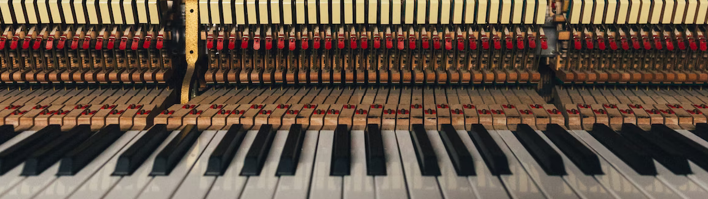

About Me
Let me tell you a little bit about me!
I am currently a student at the University of Washington, and I am pursuing a bachelor's degree in Computer Science and Software Engineering; in addition, I am also pursuing a minor in Business Administration.
More about my personal hobbies and interests…
- I love to play the piano and I believe that music is one of the greatest things in the world!
- I have developed a fascination and love for building keyboards. It has become an expensive hobby, but also extremely gratifying and therapeutic.
- I have two loving, wonderful dogs. They are probably the two things I love most in this world, and if I could spend all day playing with them, I would!!
Currently in development, are some of my personal values:
Learning Never Stops
This is one my current employer's mission statements: Echelon Risk + Cyber. When I went through their mission statements, prior to an interview, this mission statement spoke to me. I connected very deeply with it, and I truly believe that it is impossible to stop learning. There will always be new things to learn in this world. For example, I learned so much about coding in HTML by building this website. The caveat to this value is that learning can only stop when you choose it to stop. I want to be someone who will never choose to stop learning!
Kindness is One of the Greatest Gifts You can Give
This is a personal value that I came up with, although it isn't an all-original idea. I am lucky to have grown up in a family that could support me, love me, and help me excel in the world. I am lucky to have made such wonderful and caring friendships that have lasted a long time. I believe that without all of their kindness and support, I would not have been able to thrive.